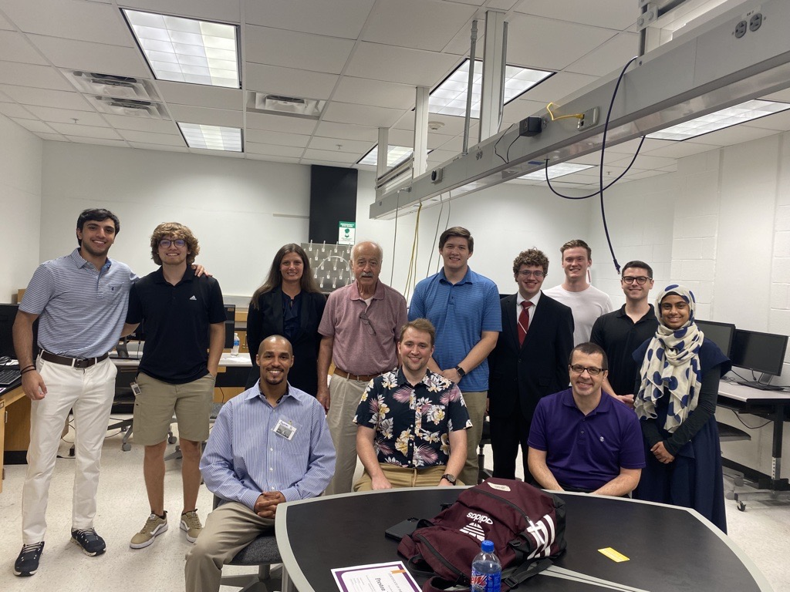

Resume

Kamron Hopkins
Greenville, NC 27834
hopkinsk19@students.ecu.edu
GitHub.com/kamron-h
Linkedin.com/in/kamronh
Willing to Intern/Work for FREE in exchange for Experience
Engineering Related Courses & Certifications :
.
**Note: G represents Graduate level courses. Enrolled in the master of science in software engineering program or consent of instructor.
Techniques for developing applications and services to run on distributed networks using virtualized resources accessed over the Internet.
Software construction tools and practice, including software development environments, object-oriented programming, software specification, automated testing, version control, and build management for software systems.
Fundamental algorithms and computational models for core tasks in natural language processing. Word and sentence tokenization, parsing, information and meaning extraction, spelling correction, text summarization, question answering, and sentiment analysis.
Advanced methods and techniques to initiate, plan, and control large and complex software development projects. Emphasis is placed on various Agile approaches.
Approaches to storing, processing, retrieving, analyzing, and managing massive-scale structured and unstructured data. High-performance computing and architectures and methods for developing and querying databases for Big Data. Column-relational, key-value, column-oriented, RDF, document-oriented, native XML, and graph databases.
Concepts, technologies, and building blocks from computer science and practical software engineering required for developing web applications. Web application architectures, client and server-side programming, state management, authentication, and authorization.
Mathematical techniques and algorithms for image sampling, quantization, intensity transformations, spatial filtering, Fourier transforms, frequency domain filtering, restoration and reconstruction, morphological image processing, and segmentation.
Computing in environments with limited resources and low power, fault tolerance, and persistence. Mobile application frameworks and development environments. User interface design and evaluating user experience.
Designing iterative development processes, modeling and analysis of software systems, object-oriented design, and design patterns.
Relational database systems theory and database development. Topics include relational data model and integrity constraints specification, data modeling and relational schema design, normalization of relational schema, relational algebra, SQL, and database programming.
Practice in writing about technical problems of significance to student.
Design and analysis of computer communication networks. Topics include application layer protocols, Internet protocols, network interfaces, local and wide area networks, wireless networks, bridging and routing.
Methods and processes for eliciting, evaluating, managing, analyzing, documenting, and specifying software-intensive systems for achieving objectives, functions, qualities, and constraints.
Design and analysis of algorithms using recursion, dynamic programming, and branch and bound. Solving computational problems using maps, hash tables, skip lists, and graph data structures.
Principles of discrete mathematics, including combinatorial proofs, discrete probability, recurrence relations and generating functions, graphs and trees, and analysis of algorithm efficiency. Application of discrete mathematical concepts to solving software engineering problems.
Introduction to data structures and their implementation. Computational problem-solving using data structures.
Fundamentals of discrete mathematics, including logic and elementary proofs, sequences, induction and recursion, sets and relations, and elementary number theory. Application of discrete mathematical concepts to solving software engineering problems.
Introduction to modern software engineering and computational problem-solving using object-oriented principles and a high-level programming language.
ID: fcb518bbd47a427a9a75db8fc2c0e848
Institution: Microsoft
Description: Designed for beginners, providing a comprehensive introduction to Python and fundamental programming concepts. It covers Python syntax, control structures, functions, error handling, and file operations through interactive exercises and projects. This self-paced course, ideal for those new to programming, offers a flexible learning path complemented by a certificate of completion from Microsoft.
Completion Date: July 31st, 2019
Website: https://courses.edx.org/certificates/fcb518bbd47a427a9a75db8fc2c0e848
ID: 2c00165eb4e245d2be44bf64a1dfd070
Institution: International Business Machines Corporation (IBM)
Description: Aimed at introducing Python programming in the context of data science. It focuses on fundamental Python programming techniques and concepts, including data structures, loops, and Python libraries, essential for data analysis and visualization. The course is designed for beginners and combines theoretical knowledge with practical exercises, making it ideal for those looking to apply Python skills in data science projects.
Completion Date: June 11th, 2019
Website: https://courses.edx.org/certificates/2c00165eb4e245d2be44bf64a1dfd070
ID: DDVPAPJ6BTWM
Institution: University of Michigan
Description: An in-depth exploration of web application development using Django, a high-level Python web framework. It covers the fundamentals of building web applications, including database models, the Django template system, forms, and user authentication. Designed for those with basic programming knowledge, this course provides practical skills and insights into developing robust web applications efficiently using Django.
Completion Date: May 17th, 2022
Website: https://www.coursera.org/account/accomplishments/verify/DDVPAPJ6BTWM
ID: D49ENBABG9RW
Institution: University of Michigan
Description: Focuses on advanced techniques in web development using the Django framework. It delves into complex aspects of web application building, such as user interactivity, data models, and the integration of external services. This course is designed for individuals with a foundational understanding of Django, aiming to enhance their skills in creating more sophisticated and dynamic web applications.
Completion Date: May 23th, 2022
Website:https://www.coursera.org/account/accomplishments/verify/D49ENBABG9RW
ID: In Progress
Institution: Meta
Description: Designed to provide a comprehensive introduction to web development using the Django framework. It covers the essentials of Django, including models, views, templates, and forms, with a focus on building robust and scalable web applications. Ideal for those with basic Python knowledge, this course emphasizes practical learning through projects, enabling students to build and deploy fully functional websites.
Completion Date: In Progress
Education :
.
East Carolina University (ECU).. – Greenville, NC
.....B.S. Software Engineering.......01.2022 – 05.2025
.
Pitt Community College (PCC).. – Winterville, NC
.....Associates in Arts.......07.2018 – 12.2021
.
Divers Institute of Technology (DIT).. – Seattle, WA
.....Profession Commercial Diver.......07.2016 – 02.2017
Relevant Work Experience :
ML Research Intern
National Science Foundation (NFS) - Greenville, NC ..(04/2023 - 07/2023)
The National Science Foundation's (NSF) Research Experience for Undergraduates (REU) program is designed to provide undergraduate students with hands-on, research-based experiences in various scientific and engineering disciplines. The program aims to introduce students to academic research, encouraging them to pursue graduate studies or careers in research and development. The program seeks to equip students with critical skills in AI and ML, promote diversity in the research community, and address current challenges by encouraging innovative, interdisciplinary research projects.- Conducted comprehensive research on "No-Code Software Development", analyzing over 50 scholarly papers to identify key challenges and emerging opportunities, enhancing understanding of the field's landscape.
- Enhanced technical proficiency in Overleaf and LaTeX, and mastered Axiom for efficient data scraping, successfully automating the extraction of insights from over 2,000 software reviews for comprehensive analysis.
- Utilized Python and Jupyter Notebook alongside IBM’s AutoAI for advanced data analysis, uncovering significant trends and patterns in software development practices and user experiences, contributing to actionable research findings.
- Advanced public speaking and presentation skills delivering weekly updates and a capstone presentation at a research symposium, effectively communicating complex research findings to both technical and non-technical audiences, fostering peer and mentor engagement.
Self-Help Research Assistant
East Carolina University (ECU) - Greenville, NC ..(03/2024 - Current)
ECU is conducting research on all the Software Engineering Graduate Degree programs in the nation. The purpose for the research is to use data science analysis techniques to make comparisons between ECU's program and other competing universities for ECU's program improvement.
- Develop a comprehensive research plan to systematically assess national graduate programs in Software Engineering.
- Engage with multiple institutions to gather detailed information on their program offerings, ensuring a robust data set for analysis.
- Document the research process and maintained effective communication with program administrators, ensuring transparency and alignment.
- Collect, store, and meticulously manage an extensive dataset on national universities and their graduate programs within a cloud-based database infrastructure.
- Apply machine learning algorithms to analyze the data, crafting visual representations that facilitated insightful conclusions and strategic recommendations.
- Design and deploy an interactive website, integrating a large language model (LLM) to dynamically analyze data through real-time graphs and charts, enhancing accessibility and understanding of the findings.
- Present comprehensive findings to program administrators, highlighting key insights and actionable recommendations for program advancement.
Technical Skills :
- iOS Development
- Web Development
- Swift
- Python
- MicroPython
- Java
- HTML5
- CSS3
- SASS
- Bootstrap
- Django
- Flutter
- Git
- SQL
- PostgreSQL
- Firebase (NoSQL)
- Xcode
- PyCharm
- Visual Studio Code
- Linux CL
- Linode
- Cloudflare
- Firebase
Professional References :
.
Alex Vilkomir | East Carolina University | Senior Software Engineer & Instructor
(# Provided Upon Request) | vilkomira21@ecu.edu
.
Clinton Wimberly | Inter-Technologies | Design Engineer
(# Provided Upon Request) | cwimberly@intertech.tv
.
Brian Dietrick | East Carolina University | Senior Software Engineer & Instructor
(# Provided Upon Request) | dietrickb20@students.ecu.edu
Technological Interests :
- IoT
- Statistics
- Computer Vision
- Cryptography
- Cloud Computing
- Entrepreneurship
Organizations :
.
Association of Computer Machinery ..(ACM)
.
National Society of Black Engineers ..(NSBE)
.
Universal Negro Improvement Association & African Communities League ..(UNIA-ACL)